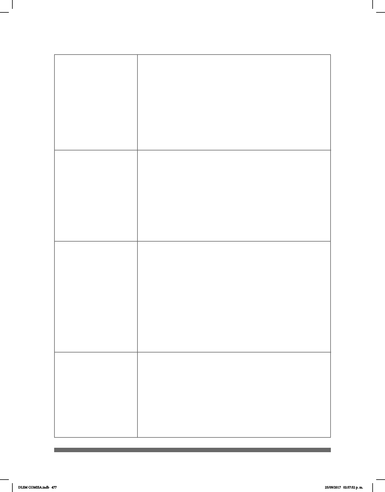

477
3. Los Estados Partes brindarán a las personas con discapacidad la
posibilidad de aprender habilidades para la vida y desarrollo social.
Adoptarán las medidas pertinentes, entre ellas:
b) Facilitar el aprendizaje de la lengua de señas y la promoción de la
identidad lingüística de las personas sordas.
c) Asegurar que la educación de las personas, en particular de los
niños y las niñas ciegos, sordos o sordociegos se imparta en los
lenguajes y los modos y medios de comunicación más apropiados
para cada persona y en entornos que permitan alcanzar su máximo
desarrollo académico y social.
4. Los Estados Partes adoptarán las medidas pertinentes para
emplear a maestros, incluidos maestros con discapacidad, que estén
cualicados en lengua de señas o Braille y para formar a profesionales
y personal que trabajen en todos los niveles educativos.
1. A n de que las personas con discapacidad puedan vivir en
forma independiente y participar plenamente en todos los aspectos
de la vida, los Estados Partes adoptarán medidas pertinentes para
asegurar el acceso de las personas con discapacidad, en igualdad de
condiciones con las demás, al entorno físico, el transporte, la
información y las comunicaciones, incluidos los sistemas y las
tecnologías de la información y las comunicaciones.
2. Los Estados Partes también adoptarán las medidas pertinentes para:
e) Ofrecer formas de asistencia humana o animal e intermediarios,
incluidos guías, lectores e intérpretes profesionales de la lengua de
señas, para facilitar el acceso a edicios y otras instalaciones abiertas
al público.
Los Estados Partes adoptarán todas las medidas pertinentes para que
las personas con discapacidad puedan ejercer el derecho a la libertad
de expresión y opinión, incluida la libertad de recabar, recibir y facilitar
información e ideas en igualdad de condiciones con las demás, entre
ellas:
b) Aceptar y facilitar la utilización de la lengua de señas, el
Braille, los modos, medios, y formatos aumentativos y alternativos de
comunicación y todos los demás modos, medios y formatos de
comunicación accesibles que elijan las personas con discapacidad
en sus relaciones ociales;
e) Reconocer y promover la utilización de lenguas de señas.
Artículo 9
Accesibilidad
Artículo 24
Educación
Artículo 30
Participación en
la vida cultural,
las actividades
recreativas,
el esparcimiento
y el deporte
Artículo 21
Libertad de expresión
y de opinión y acceso
a la información
4. Las personas con discapacidad tendrán derecho, en igualdad
de condiciones con las demás, al reconocimiento y el apoyo de su
identidad cultural y lingüística especíca, incluidas la lengua de señas
y la cultura de los sordos.
DLSM COMISA.indb 477 25/09/2017 02:57:52 p. m.